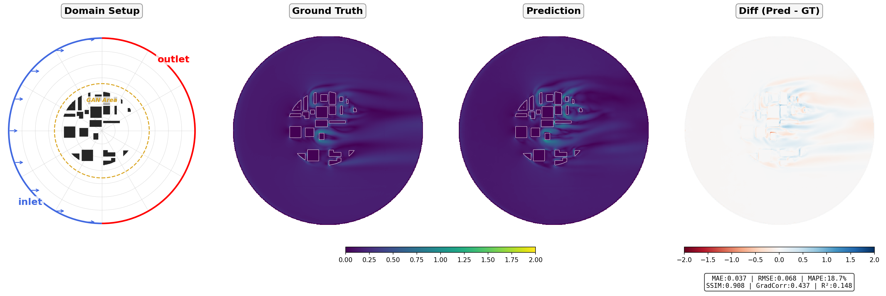
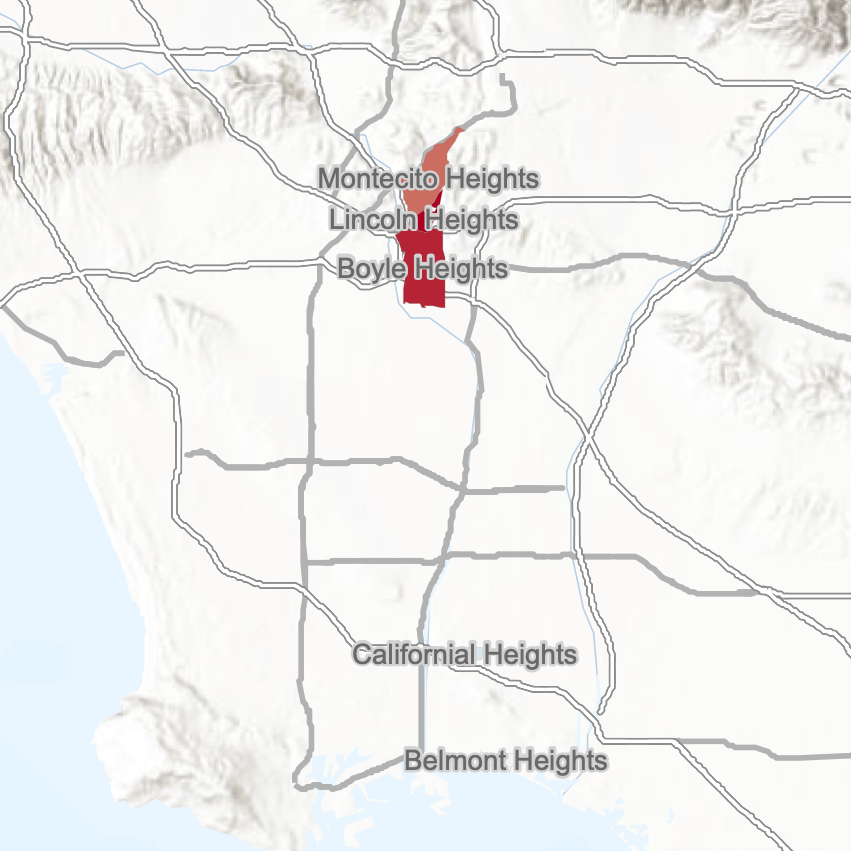
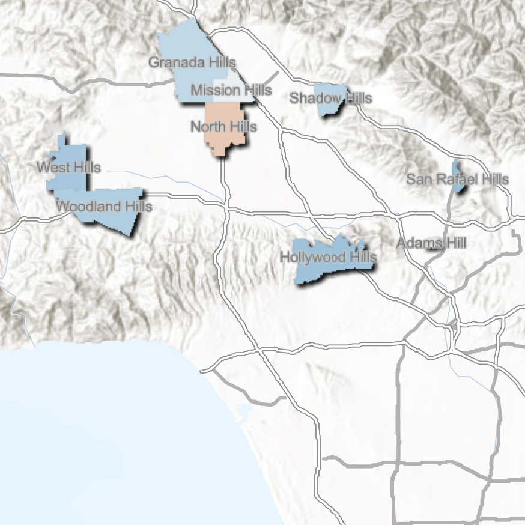

Surrogate Machine Learning for Fluid Dynamics
Exploration of modern advances in machine learning to predict complex urban wind fields
Georgia Tech Campus Simulator
Large-scale sporting event simulation on Georgia Tech Campus
3D Scene Reconstruction Project
Mixing computer vision techniques to reconstruct 3D environments from 2D images.
Training More Robust Human Pose Estimators
Improving the performance of 3D human pose estimators in specialized domains
ImmerseGT 2026 Hackathon Winner
Extended reality project exploring crowdsourcing historical narratives and reimagining history
Neighborhood Toponymy Project
Investigating the relationship between neighborhood name and income
William Edmondson Homesite Project
Mapping the forgotten bounds of a famous Nashville sculptor through georeferencing
Learning to Play Soccer with Reinforcement Learning
Training an agent to play a 2v2 soccer game using advanced RL techniques
Architecture Portfolio
Five curated projects investigating themes in history and identity through space
Monuments & Memorials Thesis
Exposing the relationship between a city's public emblem and its charged history

Sustainable Urban Systems Lab — Wind Comfort ML Team
Spring 2026—
Computational Fluid Dynamics (CFD) simulations is a mathematical
approach to solving fluid flow problems, and while they are the
closest known approximator of fluid simualtions, they are notorious
for being computationally expensive, as a single simulation could
take up to weeks to solve. Engineers and architects benefit from CFD
when modeling wind in simulated urban plans as a way to predict
pedestrian comfort on the ground level, yet often don't have this
time to afford early in the ideation phase of their design process,
so using CFD is almost always out of the question until much later
in the design process.
Machine learning-based surrogate models have emerged as a strong
alternative to predicting such wind flow, accurately approximating
the solutions to complex CFD problems in no more than a second. The
best candidate models vary tremendously in motivation and
architecture, from CNNs in latent/fourier space to physics-informed
transformer networks, constituting an exciting, rich field of
research that can make complicated engineering and design practices
much more accessible.
Image Classification and Scene Reconstruction
Fall 2025
Implemented an end-to-end pipeline of computer vision techniques to reconstruct 3D scenes from a mixed collection of unfiltered, crowdsourced 2D images. This pipeline used a CLIP model for image classification, followed by a comparison of 3 camera pose estimation methods, and finally gaussian splatting for the rendering. Experiments of these 3 types of camera pose estimation models, with classical COLMAP as a baseline, neural-network-based PoseNet, and a novel pose refinement model, revealed that PoseNet performed best (25% improvement) at the cost of long training time, while the simple neural network pose refinement model still succeeded in decreasing the error of COLMAP by 9% on average.

A 2.5D Approach to Training Robust 3D Pose Estimators in Specialized Execise Settings
Spring 2026
The biggest challenge in training robust 3D human pose estimators is
that most large-scale annotated 3D datasets come from sterile,
clean, lab environments that don't generalize well to diverse
settings. This project investigates whether we can capitilize on the
abundance and diversity of 2D datasets in training 3D pose
estimators that perform well even in highly specialized domains.
This research project explored using either target or
non-target-domain 2D data to improve the generalizability of the 3D
pose estimator by subjecting the estimator to a 2D reprojection
loss.
Results show that both using target-domain 2D pseudolabels or
non-target 2D data indeed improved the generalizability of the model
and succeded in reducing the loss of 3D human pose estimators
significantly when evaluated on a gym exercise domain, and we
believe it would work on other similarly specialized environments.


Neighborhood Toponymy Project
Fall 2023
Project for GIS and Remote Systems class examines the relationship
between median household income and neighborhood toponymy, the study
of place names. This project examined 19 types of common place
suffixes (e.g. containing the word "park", "heights", etc.) across
27 of the largest US cities (3721 neighborhoods in total), and the
local and global patterns in income.
Using hot spot analysis and statistical tests on income aggregated
on neighborhood name, no statistically significant correlation was
found between neighborhood name and income. However, many local
patterns hinted at a mediating role that geography plays in income
differences that are present.
William Edmondson Homesite Project
Summer 2024
The fight to preserve the pioneering African-American sculptor
William Edmondson's legacy has been a decades-long fight between the
city of Nashville, private developers, and the working-class
Edgehill community he once called home. After his neighborhood's
houses were cleared following Nashville's urban renewal, today an
elementary school with a beloved memorial garden sits on the land, a
space whose future has recently been put into question once again.
As a research assistant at the Vanderbilt Institute for Spatial
Research, I georeferenced a catalog of historical housing, zoning,
and aerial maps and site plans of Edmondson's Edgehill community.
Understanding the spatial relationship between Edmonson's Edgehill
and modern Edgehill can offer us clues into how the rooted Edgehill
community has experienced and reacted to change amidst the boom and
rebranding of one of America's fastest growing cities.


M.Arch Portfolio
Fall 2024
M.Arch portfolio consisting of 5 works created throughout my
exploration of the built environment in my undergrad career. The
most dominant themes I explored during my studies, expressed
strongly throughout these projects, are the role that history plays
in shaping modern space and identity
Having always had a passion for data visualization and optimizing
the learning of complex information in digestible ways, many of my
projects serve as case studies for how vastly different forms of
media can be expressed succintly, whether that be through 3D space,
multimedia maps, or collages.
Campus Simulator Project
Spring 2026
Simulation of a large scale sporting event on Georgia Tech's campus. Involved in depth review of literature into modeling pedestrian flow. As opposed to macroscopic models like Hughes' model for pedestrian dynamics, we opted for an individual agent-based social model that represents agent movement motivation as a series of ordinary differential equations. We apply this logic to simulate the plausible traffic and congestion that would take place if a large sporting event took place on Georgia Tech's campus.

From Mystery to History
Spring 2026
Designed for ImmerseGT26's historical preservation track sponsored
by TanitXR, Mystery to History is a Snapchat XR Spectacles app that
crowdsources public narratives, documents collective memory, and
reimagines history.
Users are encouraged to photograph meaningful snapshots of their
local public spaces. The application aggregates these images based
on location, and as it accrues more users who photograph the same
subjects and locations, a unified 3D model can iteratively be
refined through stereogrammetry techniques. We can use this
collective 3D model as a monument to what is considered meaningful
to local communities, and begin to record a history where we
document how these spaces change over time. In addition to
crowdsourcing local history, the app uses machine learning models in
point cloud completion to imagine what certain documented artifacts
might have looked like prior to ruin, serving as an instructive tool
in motivating people to inquire, document, and learn about the
global and local past.
Soccer Twos Reinforcement Learning Agent
Spring 2026
Experimentations on how shaping observation space, reward function, and agent strategy can improve the training of reinforcement learning agents in a game of multiplayer soccer. Found that simplifying observation space sped up convergence at the expense of expressiveness, while implementing specialized rewards improved the performance of agents by encouring behavior that mimicked real-life effective soccer actions.

Rebranding Nashville Through its Most Famous Icon
Spring 2024
The "I Believe in Nashville" mural is a seemingly shallow piece of
street art, yet its extreme popularity in the media, within its
local community, and among the American public, enable us to
understand Nashville's relationship with the art and the city's
charged past. In this thesis, I present three layers to view the
mural. Beyond its surface understanding as a symbol of resilience in
the face of disaster, it can also be seen as an insignia of "New
Nashville," a city that exploits its own culture to outside
developers at the expense of locals. And with the widespread digital
circulation of the mural, we can understand it through the lens of a
highly commercialized and divided society that uses the icon as a
facade for unity.
This paper argues that the ways in which the public has received,
replicated, parodied, and commodified “I Believe in Nashville” both
reflects and perpetuates an especially Nashvilian tradition of
falsifying its own identity to rebrand itself for growth.